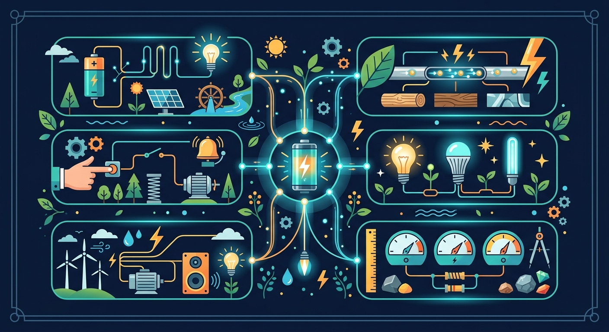

——认识简单电路：为什么按下开关，灯就会亮？

手电筒按下开关灯就亮，拔掉插头电器就停——这些你每天都在用。
为什么按下开关灯就亮？导线断了灯为什么灭？里面到底发生了什么？
认识简单电路的 4 个元件，搞清楚通路和断路，自己动手让灯泡亮起来！
2 道小题，帮你确认起点。前测不计分，答完会给出学习建议。
手电筒里的零件，你觉得哪个让灯泡亮起来？
如果导线中间断了一截，灯泡会怎样？
📌 前测不计分，只帮你定位起点。无论选什么，接下来的课件都会告诉你正确答案！
少了任何一个，电流就走不通，灯就亮不了。点击每个卡片了解更多！
一个完整的电路必须包含哪几个部分？
四个元件都齐了：电池、导线、开关、灯泡。
为什么有时候灯还是不亮？
关键看电路是否形成完整回路——通了叫"通路"，断了叫"断路"。
开关的作用是什么？
灯泡不亮，最可能的原因是什么？
拖拽元件放到电路板上，让四个元件形成完整回路，看看灯泡能不能亮起来！
选择元件，点击电路板上的空位放置。完成完整回路让灯泡亮起来！
电流在电路中流动的方向是？
下列哪个不是用电器？
📝 在下面空格填入电路四个元件的名称和作用：
🔎 判断题：小明用电池、导线、灯泡搞了一个电路，但灯泡不亮。请分析可能的原因：
💡 开放探究：如果要让 2 个灯泡同时亮起来，你还需要几根导线？几个开关？用纸笔画出你设计的电路连接方式，并说明为什么这样设计。
和前测类似的问题，看看你现在的答案有没有变化！
手电筒里的零件，哪个让灯泡亮起来？
如果导线中间断了一截，灯泡会怎样？
电池只接一根导线灯不会亮——必须形成完整回路。断路不一定是故障：开关断开是主动控制的断路，导线断了、灯泡坏了才是故障断路。